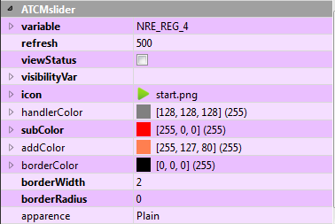

Look and functionality customization
Selecting the element, its property are shown in the lower right size of the window of QtCcreator in the section ATCMslider.
Modifying one or more properties the graphic aspect and some functionalities can be modified.
To modify them select right column of the corresponding row.

In particular for functionalities:
variable: defines Crosstable variable where is stored current value of the slidebar.
value: shown value preview. WARNING: It is not the default value.
refresh: refresh time of the object in milliseconds.
viewStatus: if checked the color is green or red if button is used as toggle, depending on setting of variable and
if the edge is visible.
visibilityVar: if an object visibility must be linked to a variable value, write the name of the variable here.
In particular for graphic aspect:
icon: contains the icon associated to pointer of the slidebar. With key “…”
it is possible to insert system icons. The following windows appears, choose icon and press OK:

handlerColor: color of the pointer of the slidebar.
subColor: color of the region of the slidebar under the pointer.
addColor: color of the region of the slidebar over the pointer.
borderColor: color of the object, only if the edge is > 0.
borderWidth: pixel thikness of the object.
borderRadius: curve radius of corner of the object.
apparence: style of the object.
WARNING: in all Properties, except ATCM plugin, it is possible to see the “Context Help”
of Qt to see a description of the functionality: select the desired row and press “F1” key.
To use the code properties, to write in Help →Index: QSlider.